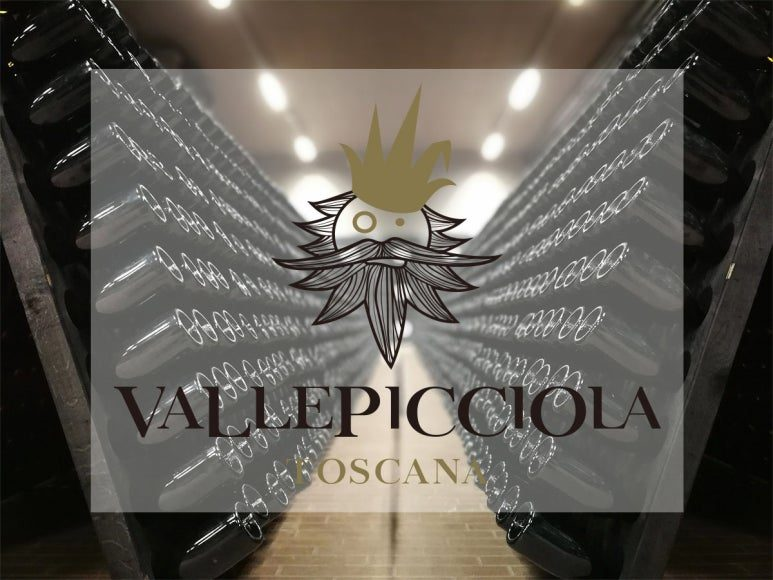

이탈리아 토스카나의 붉은 열정, 발레피치올라 끼안티 클라시코 매그넘
선선한 바람이 부는 저녁이나 소중한 사람들과 맛있는 육류 요리를 즐기는 자리에서 가장 먼저 생각나는 와인은 단연 깊은 풍미를 가진 레드 와인입니다. 전 세계적으로 정말 수많은 종류의 레드 와인이 많은 애호가들의 사랑을 받고 있지만, 이탈리아 와인의 심장이라고 불리는 토스카나 지역에는 대중적이면서도 특유의 세련된 산미와 구조감으로 가득 찬 끼안티 클라시코가 있답니다. 오늘 소개해 드릴 와인은 바로 이탈리아 토스카나의 전통과 모던함을 동시에 품고 있는 발레피치올라 끼안티 클라시코예요.
선선한 바람이 부는 저녁이나 소중한 사람들과 맛있는 육류 요리를 즐기는 자리에서 가장 먼저 생각나는 와인은 단연 깊은 풍미를 가진 레드 와인입니다. 전 세계적으로 정말 수많은 종류의 레드 와인이 많은 애호가들의 사랑을 받고 있지만, 이탈리아 와인의 심장이라고 불리는 토스카나 지역에는 대중적이면서도 특유의 세련된 산미와 구조감으로 가득 찬 끼안티 클라시코가 있답니다. 오늘 소개해 드릴 와인은 바로 이탈리아 토스카나의 전통과 모던함을 동시에 품고 있는 발레피치올라 끼안티 클라시코예요.
끼안티 클라시코는 이탈리아 토스카나의 특정 명품 재배 지역의 법적 기준을 엄격하게 맞춰 만든 와인으로, 병 목에 붙은 검은 닭(Gallo Nero) 문양이 상징인 고품질 와인을 뜻한답니다. 그중에서도 이번에 소개해 드리는 발레피치올라 끼안티 클라시코는 잔을 채우는 생동감 넘치는 붉은 과실 향은 물론이고, 부드러운 타닌과 깨끗한 산미까지 아주 조화롭고 매력적으로 어우러지는 웰메이드 와인이랍니다. 평소 레드 와인의 텁텁함이나 떫은맛을 어렵고 부담스럽게 느끼셨던 입문자분들부터 매일 저녁 정성스러운 식사에 곁들일 만한 완성도 높은 프리미엄 레드를 찾으시는 베테랑 애호가분들까지, 언제 어디서나 부담 없이 오픈하기 딱 좋은 대중적이면서도 고급스러운 스타일을 자랑해요.
이번에 소개해 드리는 발레피치올라 끼안티 클라시코는 일반적인 750ml 병이 아닌, 무려 두 배 용량인 1.5L 매그넘(Magnum) 사이즈랍니다. 대용량 와인병에는 단순히 양이 많다는 것 외에도 와인 애호가들이 열광할 수밖에 없는 아주 특별한 장점들이 있어요.


PART 1. 왜 매그넘(Magnum) 사이즈여야 할까요?
첫 번째로, 와인의 숙성이 훨씬 더 천천히, 그리고 우아하게 진행됩니다. 와인을 병입할 때 코르크와 와인 수면 사이에 아주 미세한 양의 산소가 갇히게 되는데, 매그넘 병은 와인 용량은 두 배로 늘어나지만 이 산소의 양은 일반 병과 거의 비슷해요. 즉, 산소와 접촉하는 와인의 비율이 훨씬 적어지기 때문에 산화 과정이 느려지고, 산지오베제 품종 고유의 싱그러운 햇과일 아로마와 신선한 산미가 오랜 시간 아주 완벽하게 보존된답니다. 더 깊고 복합적인 풍미를 천천히 완성해 나가는 와이너리의 정성을 가장 온전하게 맛볼 수 있는 크기이죠.
두 번째는 모임이나 대형 이벤트에서 압도적인 분위기 메이커 역할을 해준다는 점이에요. 테이블 위에 묵직하고 커다란 매그넘 병이 툭 올려져 있는 것만으로도 파티의 품격과 시각적인 화려함이 확 살아난답니다. 모임에 참석한 수많은 게스트의 잔을 끊임없이 채워주기에도 바틀을 여러개 오픈하지 않아도 돼서 좋고, 소중한 분들에게 마음을 전하는 특별한 비즈니스 답례품이나 기념일 선물로 준비했을 때 주는 사람과 받는 사람 모두에게 비교할 수 없는 커다란 만족감과 존재감을 선사해요.
PART 2. 토스카나 시에나의 축복받은 테루아에서 자랐어요
발레피치올라 끼안티 클라시코는 전 세계 와인 애호가들이 언제나 찬사를 아끼지 않는 이탈리아 와인의 최고 명산지, 토스카나 중에서도 시에나 동쪽 외곽에 위치한 발레피치올라 와이너리에서 생산됩니다. 발레피치올라는 서늘한 산바람과 따사롭고 풍부한 태양 광선이 교차하는 아주 멋진 테루아를 지니고 있어요. 특히 이 지역의 독특한 갈레스트로(Galestro)와 알베레제(Alberese) 점토질 석회암 토양은 와인에 깨끗한 미네랄리티와 단단한 구조감을 더해주는 핵심 비결이랍니다. 이러한 천혜의 자연환경 덕분에 포도가 나무에서 천천히 예쁘게 익어가면서, 지루할 틈 없는 생동감 넘치는 산미와 풍부한 붉은 과일의 아로마를 동시에 가득 머금게 된답니다.
이 와인에 사용된 핵심 포도 품종은 이탈리아 토스카나를 지배하는 위대한 토착 품종, 바로 산지오베제(Sangiovese) 품종이에요. 산지오베제는 이탈리아어로 주피터의 피라는 정열적인 뜻을 가진 품종으로, 포도 고유가 가진 청량한 산미와 화사한 붉은 체리 향, 그리고 입안 가득 침을 고이게 만드는 싱그러운 햇과일의 과즙미를 그대로 살려내는 데 탁월한 능력을 가진 매력적인 품종이랍니다. 인위적인 강한 오크 터치나 끈적이는 양조 뉘앙스 대신 포도 껍질과 알맹이가 가진 순수한 에너지를 정직하게 표현해내기 때문에, 마실 때마다 기분 좋은 청량함과 세련미를 동시에 보여주죠. 발레피치올라 와이너리는 이 산지오베제 품종의 매력을 극대화하기 위해 현대적인 양조 시설과 전통적인 대형 오크통 숙성 방식을 조화롭게 사용하여, 텁텁함 없이 맑고 깊은 맛을 완성해 냈습니다.
또한 이 와인은 끼안티 클라시코의 엄격한 등급 기준에 맞춰 양조되어 뛰어난 품질을 보증합니다. 와인 속에 맴도는 단맛이 전혀 없기 때문에 마신 후에도 입안이 아주 산뜻하고 깔끔하게 떨어지는 것이 최고의 특징이에요. 덕분에 본격적인 육류 식사를 시작하기 전 둔해진 미각과 침샘을 기분 좋게 깨워주는 식중 와인으로도 좋고, 기름진 요리를 먹는 중간중간 곁들였을 때 입안을 싹 씻어주는 명품 감초 역할을 톡톡히 해낸답니다.
PART 3 테크니컬 데이터
* 용량 : 1,500ml
* 알코올 도수 : 14%
* 국가 및 생산 지역 : 이탈리아 > 토스카나 > 끼안티 클라시코
* 포도 품종 : 산지오베제 (Sangiovese) 100%
* 생산연도 : 2018
* 발효 및 숙성 : 작은 스테인리스 스틸 탱크에서 알코올 발효, 10일간 저온 침용 후 오크통에서 젖산발효. 12개월 오크통 숙성. 3-5개월 병 숙성
당도 : (dry) ● ○ ○ ○ ○ (sweet)
바디 : (light) ● ● ● ● ○ (full)
* 평가 및 수상
- 91pts - Luca Maroni(2018 vin)
- 92pts - James Suckling(2018 vin)
- 88pts - Robert Parker(2018 vin)
- Bronze - Civilta Del Bere(2018 vin)
- 92pts - Falstaff(2018 vin)
- 95+pts - Luca Maroni Notes(2018 vin)
- 87pts - Wine Spectator(2018 vin)
- VIVINO : 4.0
발레피치올라 끼안티 클라시코의 구체적인 와인 스타일 지표를 살펴보면 이 와인이 가진 매력적인 방향성이 더욱 명확해져요. 우선 당도는 아주 낮고 드라이하게 마무리되는 정통 드라이 레드 와인 스타일이에요. 평소 달콤하고 진한 와인보다 깔끔하고 청량한 풍미를 선사하는 드라이 와인을 즐기셨던 분들에게 이질감 없이 편안하게 다가가는 훌륭한 미감이죠.
와인의 무게감을 뜻하는 바디는 미디엄 정도로 입안을 너무 무겁게 짓누르지 않으면서도 경쾌하게 자극하고, 산도는 침샘을 기분 좋게 자극하는 신선하고 활기찬 수준이랍니다. 날카롭거나 시큼하게 혀를 찌르는 불편한 산미가 아니라, 잘 익은 아삭한 붉은 체리나 크랜베리에서 느껴지는 맑고 깨끗한 산미이기 때문에 한 모금 마시는 순간 입안 전체에 청량한 활력이 가득 차오르는 것을 제대로 느낄 수 있어요. 타닌 또한 거칠지 않고 실크처럼 부드럽게 잘 다듬어져 있어서, 레드 와인 특유의 떫은맛 때문에 망설이셨던 분들도 기분 좋게 잔을 비워내실 수 있습니다.
PART 4. 발레피치올라 끼안티 클라시코 테이스팅 노트
깨끗한 리델 잔에 발레피치올라 끼안티 클라시코를 조심스럽게 채우면, 투명하고 맑은 루비 빛깔 사이로 반짝이는 보랏빛 광채가 어우러지는 아름다운 모습을 볼 수 있어요. 시각적으로 주는 이 투명하고 영롱한 컬러감만으로도 산지오베제 품종 고유의 청량한 개운함이 고스란히 전해지죠.
잔을 가볍게 돌려 코끝을 대면 인위적이거나 날카로운 알코올 향 대신 은은하게 달콤한 잘 익은 붉은 체리와 새콤한 라즈베리의 과일 아로마가 먼저 기분 좋게 번집니다. 이어서 은은한 바람을 타고 오는 듯한 보랏빛 제비꽃의 화사한 플로럴 아로마와 함께, 토스카나 흙내음, 살짝 감도는 가죽과 은은한 스파이스 뉘앙스가 화사하게 올라와요. 과실의 신선함과 세련된 3차 풍미가 복합적으로 어우러져 한층 더 우아하고 기분 좋은 인상을 남긴답니다.
입에 가볍게 머금으면 산지오베제 특유의 활기찬 산미와 드라이한 미감이 아주 일품이에요. 혀끝에 촉촉하게 퍼지는 매력적인 산미가 와인의 전체적인 밸런스와 중심을 단단하게 잡아주고, 목 넘김 이후에는 산뜻하고 상큼한 붉은 과일의 여운이 아주 길게 이어집니다. 무겁고 텁텁한 느낌이 전혀 없어서 마시는 내내 속이 편안하고 맑게 리프레시되는 느낌이랄까요. 군더더기 없는 정결한 밸런스 덕분에 한 잔을 비우고 나면 나도 모르게 자연스럽게 다음 잔을 채우게 만드는 매력이 가득해요.
PART 5. 이런 날씨에, 이런 음식과 함께해 보세요
발레피치올라 끼안티 클라시코의 가장 강력한 무기는 후끈하고 더운 날씨에도 부담 없이 기분 좋게 꺼내어 즐길 수 있는 '최고의 식사 파트너'라는 점이에요. 대개 여름철이나 더운 날씨에는 묵직한 레드 와인이 부담스럽기 마련인데, 이 와인은 워낙 산미가 신선하고 밸런스가 깔끔해서 살짝 시원하게 칠링해서 마시면 더위 속에서도 입맛을 확 살려주는 기적을 보여준답니다.
게다가 대단히 세련되면서도 클래식한 라벨 디자인을 지니고 있어서 홈파티, 캠핑, 콜키지 모임 어디에 가져가도 센스 있는 선택이라는 칭찬을 들을 수 있죠. 테이블 위를 고급스럽게 인테리어하기에도 정말 좋아요. 수많은 게스트가 모이는 스탠딩 파티나 비즈니스 저녁 식사 자리, 혹은 소중한 분들에게 마음을 전하는 와인 선물용으로도 인기가 아주 높답니다.
음식 매칭의 폭도 꽤나 넓은 편이어서 페어링 실패 확률이 제로에 가깝답니다. 산지오베제 품종 고유의 섬세한 산미와 드라이한 마무리 덕분에 육류 요리들과 아주 좋은 궁합을 보여준답니다. 특히 노릇하게 구워낸 티본 스테이크나 양갈비 구이, 짭조름한 양념이 가미된 갈비찜은 물론이고 담백한 토마토 소스 파스타나 화덕 피자와 정말 잘 어울려요.
재미있는 점은 이 와인이 가진 산뜻한 산미 덕분에 가벼운 치즈 플래터나 하몽, 핑거 푸드들과도 아주 잘 어우러진다는 거예요. 주말 저녁 영화를 보며 바삭하고 짭조름한 나초에 짭짤한 치즈나 살사 소스를 듬뿍 찍어 이 와인과 곁들여 보세요. 나초의 짠맛을 와인의 은은한 과실 향이 부드럽게 감싸 안고, 자칫 느끼할 수 있는 입안을 산지오베제의 산미가 개운하게 씻어줘서 아주 훌륭하게 어우러집니다. 또한 담백하게 조리된 베지테리안 구이 요리나 가벼운 안주들과 함께해도 와인의 맛이 요리 본연의 맛을 해치지 않고 환상의 궁합을 보여준답니다!
지친 하루 끝에 온몸을 산뜻하게 마무리해 줄 멋진 레드 와인을 찾고 계시거나, 다가오는 파티와 모임 자리에서 모두의 입맛을 사로잡을 실패 없는 이탈리아 레드를 고민 중이시라면 토스카나의 위대한 열정을 담아낸 발레피치올라 끼안티 클라시코를 강력하게 추천해 드려요. 가성비와 가심비를 모두 잡은 경쾌하고 깊은 풍미가 여러분의 소중한 시간을 더욱 화사하고 행복하게 채워줄 거예요. 오늘 저녁은 발레피치올라와 함께 행복한 와인 라이프를 즐겨보시길 바랍니다.
이 글은 땡큐와인 네이버 블로그에 먼저 올린 글이에요.